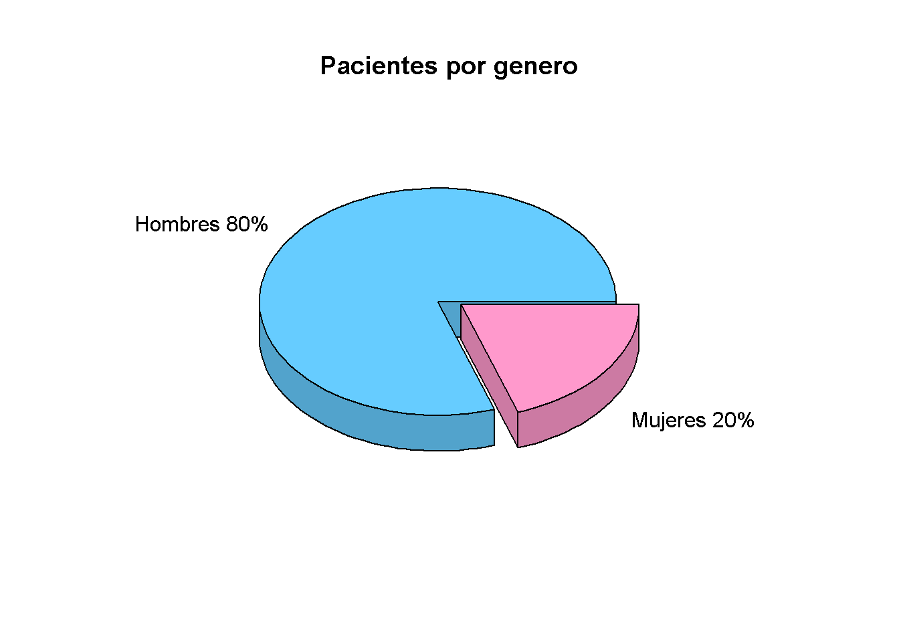
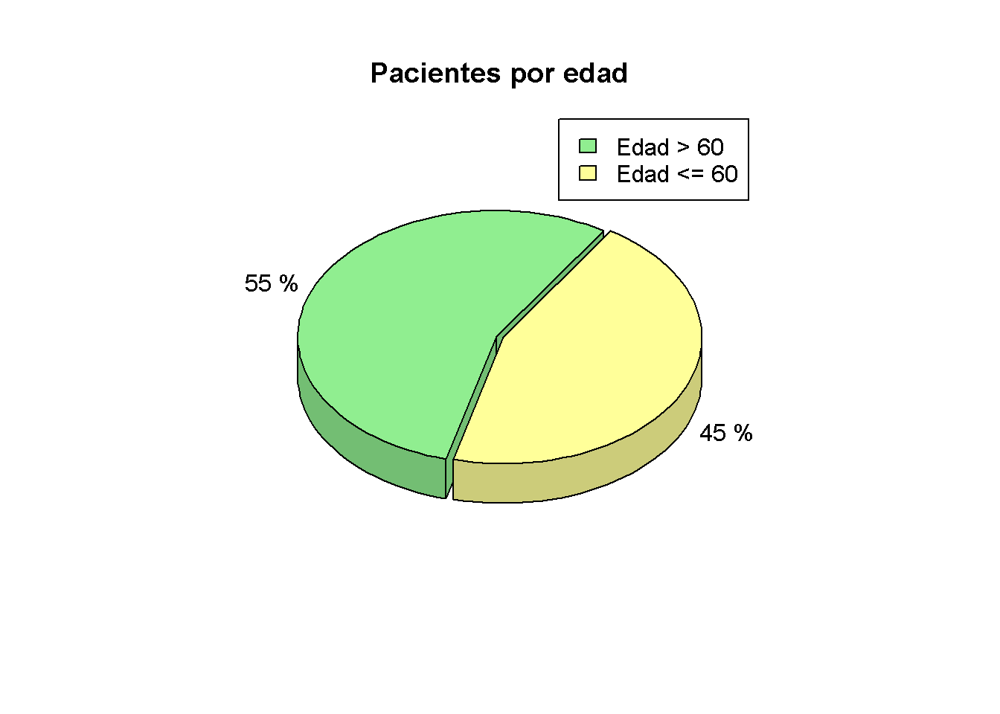
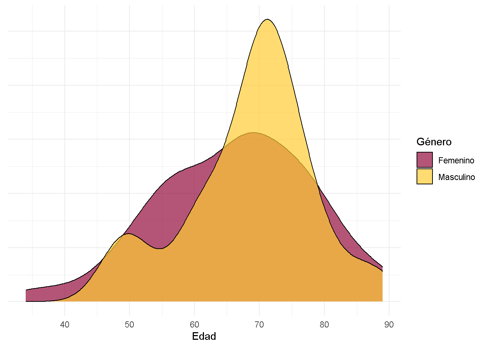
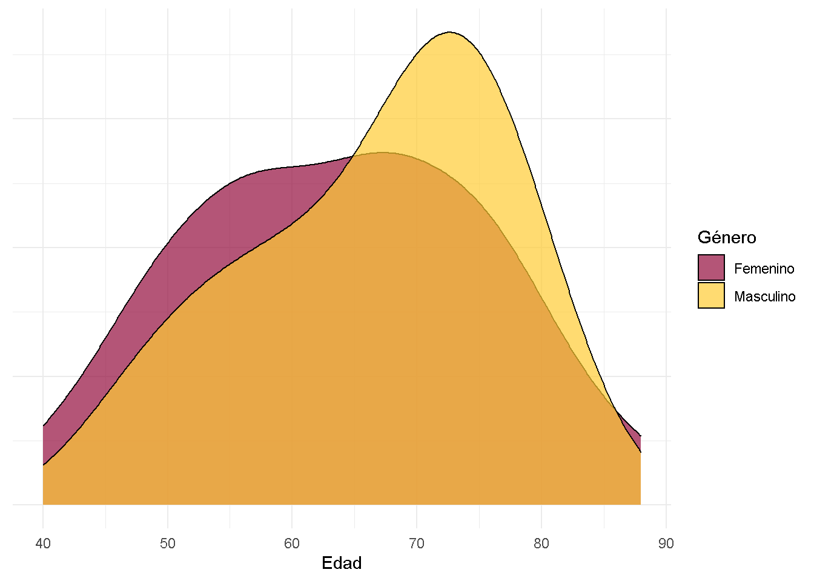
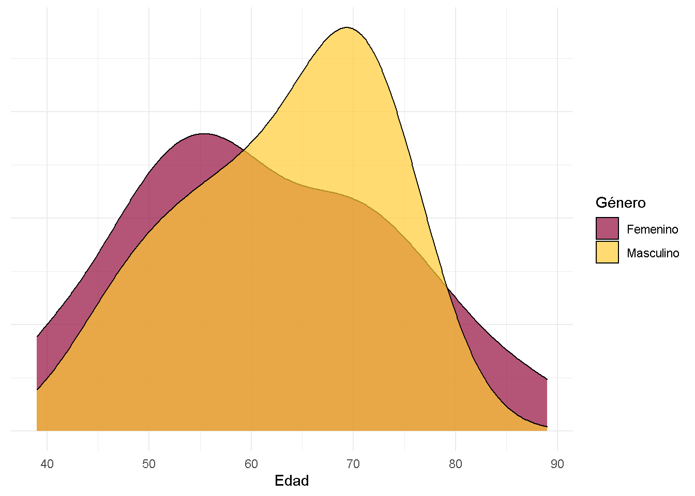
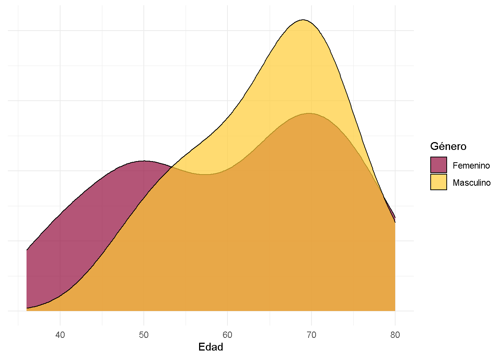
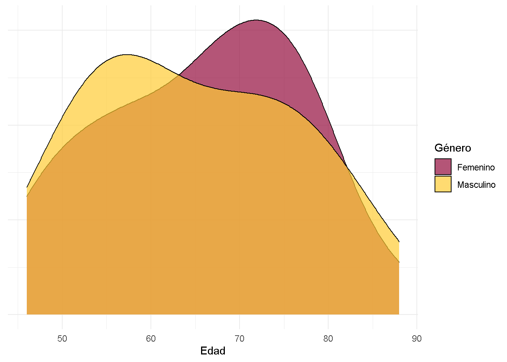

Análisis de datos para predictor de eventos cardíacos
Juan Cruz De Lorenzo, Agustin Augurusa, Florencia Froschauer
Introducción
Hay muchos factores que influyen a la hora de decidir si un paciente puede llegar a sufrir algún tipo de problema coronario, y más importante, determinar si la va a padecer en un periodo cercano de tiempo. Con el objetivo de facilitar la decisión de internar o no internar a un paciente ingresante, se realizó la siguiente investigación, con datos obtenidos de un registro de 1000 pacientes.
Análisis de datos
Nos presentaron 20 variables con factores influyentes para determinar la presencia de algún problema coronario, para determinar cuáles son más influyentes, investigamos los principales factores de riesgo y observamos cómo se comportan en los pacientes.
Género

Hicimos este gráfico con el fin de determinar qué género se ve más afectado por problemas coronarios, como se puede ver, el 80% de los hombres presentan evento contra un 20% de las mujeres.
Edad

Según un estudio realizado por la Fundación Española del Corazón, “la prevalencia y la incidencia de insuficiencia cardiaca se duplica cada década a partir de los 40-45 años”. Confirmando esto, en el gráfico se observa que más del 50% de los pacientes con eventos son mayores a 60 años.
Presencia de diferentes factores en pacientes con eventos cardíacos
Nos pareció interesante buscar una distinción entre los factores presentados en el dataset, para esto los dividimos entre causantes preexistentes y causas in actu, esto nos permitirá analizar desde otro punto de vista a los pacientes respecto a los distintos factores o síntomas que pueden presentar.
Factores preexistentes
Aquí se encontrarían los principales factores de riesgo, como son el tabaquismo, la hipertensión o colesterol.

Para un mejor análisis dividimos a los pacientes por género, visualizando en qué proporción están presentes los factores. El factor más presente en los hombres es la hipertensión, mientras que en las mujeres es el colesterol.
Rango de edad para cada factor de riesgo
Hipertensión

En el gráfico se observa una clara diferencia en la presencia de la enfermedad según el género. Los hombres presentan un pico muy alto alrededor de los 70 años, mientras que en las mujeres hay una distribución más uniforme con un pico suave también alrededor de los 70 años.
Colesterol

Se observa que los hombres de edad entre los 70 y 80 años con colesterol presentan algún problema coronario. Las mujeres presentan una meseta entre las edades de 50 a 70 años.
Tabaquismo

Las mujeres presentan un pico en el rango de edades entre los 50 y 60 años, los hombres lo presentan en una edad más tardía, alrededor de los 70 años.
Obesidad

Las mujeres presentan dos suaves picos, el primero en los 50 años y el segundo en los 70 años. En los hombres se observa un único pico más elevado a los 70 años.
Diabetes

Se encuentra bastante presente tanto en hombres como mujeres, en los primeros con un pico entre los 50 y 60 años, mientras que en las mujeres hay un pico más elevado entre los 70 y 80 años.
Datos obtenidos de la página oficial del National Heart, Lung, and Blood Institute y del artículo Obesity and the Heart de la Revista española de cardiología.
Factores “in actu”
Estas causas representan los síntomas que la mayoría de pacientes presenta al momento de tener problemas coronarios.

Este gráfico presenta variables que, por lo general, se presentan junto a problemas cardíacos, como pueden ser náuseas, disnea o dolor en el pecho. Nuevamente dividimos a los pacientes por género y se observa que tanto en los hombres como en las mujeres, los síntomas más frecuentes son sudoración, náuseas, mareos y disnea.
Pacientes con síndrome anginoso

El Consenso de la Sociedad Argentina de Cardiología realizado en 2013, considera como pacientes de alto riesgo aquellos que presentan síntomas anginosos, con “dolor prolongado mayor de 20 minutos de duración presente al ingreso”.
En el gráfico se observa un pico en los pacientes sin eventos en una edad cercana a los 40 años; un segundo pico presente en los pacientes con eventos a los 70 años aproximadamente, señala un mayor riesgo de contraer algún problema coronario en una edad avanzada.
Caracteristicas del Dolor

En el gráfico hay una mayor presencia de puntada, quemazón o acidez en los pacientes sin eventos, con un porcentaje del 39% contra un 26% de pacientes con eventos; en cuanto al dolor opresivo se ve más presente en pacientes con eventos, con el 63%, y un 50% en pacientes sin eventos. Los otros dolores aparecen en igual proporción de 11%.
Datos obtenidos de la Sociedad Argentina de Cardiologia.